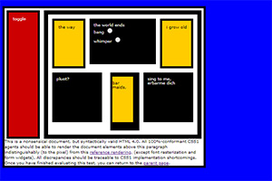

The web’s history is filled to the brim with stops and starts and wrong turns. It is a technology that was, after all, designed and built by a shifting and growing community. And every once in a while, that community needs a spark to inspire change. I’d like to point out two such moments, which when squeezed together, are responsible for the rise of Cascading Style Sheets on the web.
The web’s history is filled to the brim with stops and starts and wrong turns. It is a technology that was, after all, designed and built by a shifting and growing community. And every once in a while, that community needs a spark to inspire change. I’d like to point out two such moments, which when squeezed together, are responsible for the rise of Cascading Style Sheets on the web.
In the earliest days of the web, there was only HTML. This allowed developers to create structured websites, but it could do very little in terms of design and style. There were lots of proposed solutions, but Cascading Style Sheets (CSS), developed by Håkon Wium Lie back in 1994, came out on top. In the proposed specification, HTML would continue to be the way that websites were marked up, but CSS was the language that described how these pages should look. With CSS, web designers could add custom fonts, colors, layouts and unique designs to their webpages.
But CSS got off to a bit of a rocky start. Still, in 1997 it became an official recommendation of the W3C and began to make its way into Netscape Navigator and Internet Explorer 4, the dominant browsers of the time.
The problem was, these implementations were a bit, let’s say, scattered. Sites that looked one way in IE might look completely different in Netscape Navigator, and vise versa, because CSS properties were executed differently.
There were some that took issue with this. Eric Meyer, for instance, started testing CSS inconsistencies, and creating support charts he shared freely on his blog. These charts would show which CSS properties were supported in each browser as a reference for other developers. Around that time, the Web Standards Project (WaSP) was founded in order to promote web standards, consistency, and interoperability across browsers. A few members, Meyer among them, created a branch of WaSP known as the CSS Action Committee. You may not have heard that name though, because they labeled themselves the CSS Samurai. Together, the Samurai posted reports on CSS issues in browsers and began spreading them around.
It was one of these members, Todd Fahrner, that lit our first spark.
Fahrner decided it was time to, quite literally, put browsers to the test. He threw up a simple webpage which he called the “Box Acid Test.” The page itself was fairly simple. When rendered properly, the page contained a series of positioned, multi-colored boxes (as its namesake suggests).
The key here though is “when rendered properly.” Fahrner’s test was made up of a variety of CSS selectors, used to apply fonts, style form elements and arrange boxes on the page. If a browser incorrectly supported CSS, the page itself would fall apart, and it became very easy to tell what was wrong.
At the beginning, every browser failed. But that was the point. The Box Acid Test gave developers a quick reference for what was supported where, and browser implementers an example to build off of. The CSS Samurai also used the Box Acid Test to verify what progress was made. They even published the results from the test in harrowing reports like "IE’s Top 10 CSS Problems" in an effort to prompt change from the browsers. An effort that ultimately worked. Little by little, CSS become widely and consistently supported in browsers. The need for the CSS Samurai faded away, and they eventually went their separate ways.
 The Box Acid Test did its job, pushing browsers in the right direction. In the years that followed, CSS became a reliable tool for web developers to create unique, colorful and robust designs. If only they would use it.
In the chaotic years of mixed browser support, CSS became pretty unpopular among web designers. Website creators instead leaned on HTML data tables (or spacer gifs), which allowed them to lay things out to exact dimensions. This wasn’t the fault of developers necessarily. There was simply no other choice. At one time, not using CSS was actually a best practice. That is, until Dave Shea lit up the way forward.
Shea was a web developer. He had confidence in CSS. He knew what the problem was too. The web just didn’t have enough examples. Sure, some had started to experiment, like Doug Bowman in an ambitious redesign for Wired created entirely with CSS. But there weren’t that many others. So Shea decided that he would show instead of tell.
In May of 2003, Shea created CSS Zen Garden. The garden was actually a collection of webpages. Each webpage had exactly the same HTML and content. The only difference was the CSS. The first 5 examples were created by Shea himself. And with just a few tweaks of CSS, these pages were incredibly different.
Shea’s next move was to ask the public for their own submissions.
User created stylesheets came pouring in, and Shea posted them all to his website. In the diversity of the designs, it was easy to recognize the versatility of CSS. All sorts of experiments happened in the Zen Garden. Some designers, for instance, made use of a new technique from Bowman (of Wired fame) that made it possible to swap out text with custom images. Others used float based layouts, background colors and judicious padding.
The idea caught on. People used the Zen Garden to show their bosses and clients what CSS could do. Designers and developers borrowed techniques and code from the examples. There were plenty of hacks (some were quite fun!), but they complemented web standards rather than fight against them.
And best of all, CSS finally became trustworthy.